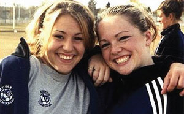

|  |
Extracurricular Activities
Peer Support, Choir, Prayer Group, Grad Committee, Drama Club,
Travel Club, Fitness Club, F.X. Improv Team, Ski Club, Intramurals,
Social Justice, French/Italian/Spanish Club, Speech & Debate Club,
Leadership Team, Yearbook, Newspaper Club, 25 competitive sports
teams, Badminton, Rugby, Basketball, Soccer, Curling, Cross Country,
Swimming, Golf, Football, Track & Field, Volleyball, Cheer Team, Sport
Development Programs - Hockey, Soccer and Lacrosse, FX Live TV. |